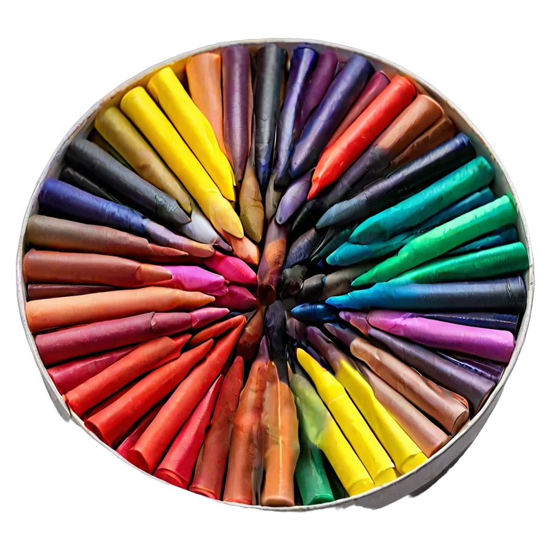
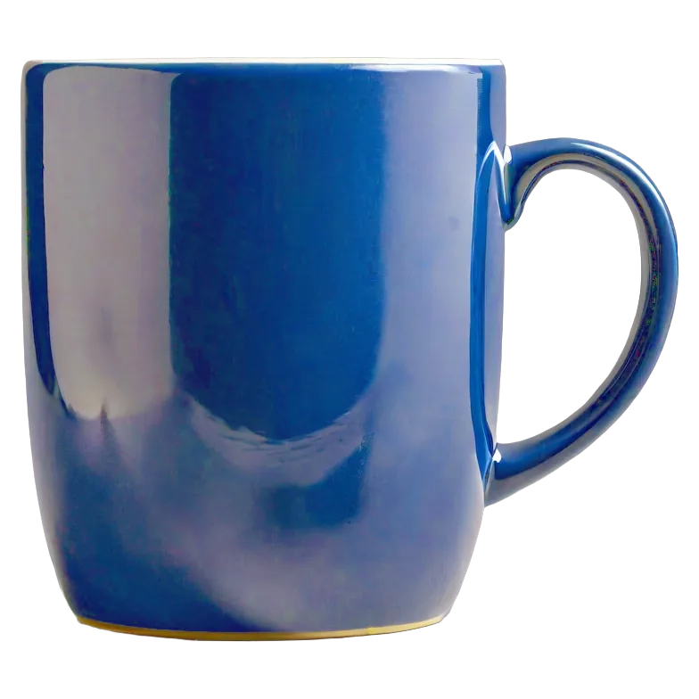
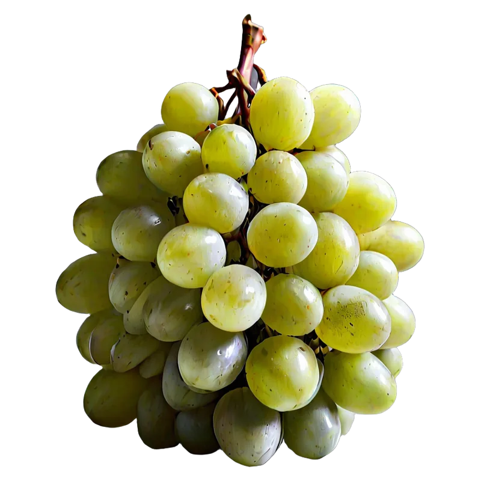
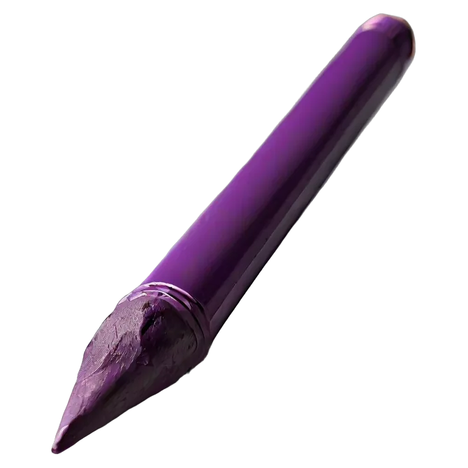
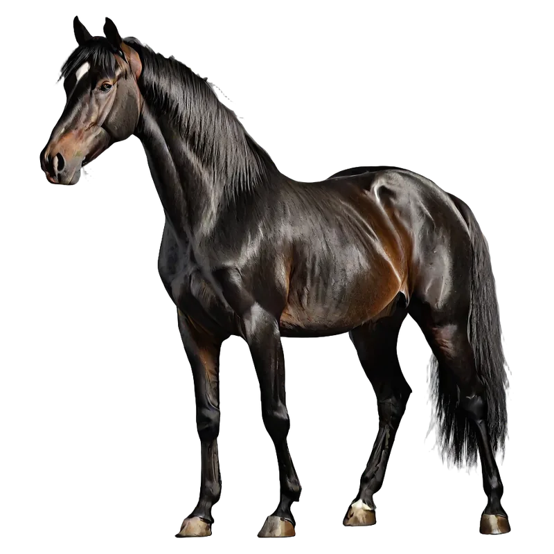

كِتَابِي الْأَوَّل
الْأَلْوَان

صِغَارُ الضَّاد
04-colors · page 1 · front cover
هَذَا الْكِتَابُ لِـ:
04-colors · page 2 · inside front cover
أَحْمَر

تُفَّاحَةٌ حَمْرَاءُ
04-colors · page 3 · item 01
أَزْرَق

كُوبٌ أَزْرَقُ
04-colors · page 4 · item 02
أَصْفَر

مَوْزَةٌ صَفْرَاءُ
04-colors · page 5 · item 03
أَخْضَر

عِنَبٌ أَخْضَرُ
04-colors · page 6 · item 04
بُرْتُقَالِيّ

جَزَرَةٌ بُرْتُقَالِيَّةٌ
04-colors · page 7 · item 05
بَنَفْسَجِيّ

قَلَمٌ بَنَفْسَجِيٌّ
04-colors · page 8 · item 06
وَرْدِيّ
وَرْدَةٌ وَرْدِيَّةٌ
04-colors · page 9 · item 07
بُنِّيّ

دُبٌّ بُنِّيٌّ
04-colors · page 10 · item 08
أَبْيَض

بَيْضَةٌ بَيْضَاءُ
04-colors · page 11 · item 09
أَسْوَد

حِصَانٌ أَسْوَدُ
04-colors · page 12 · item 10
أَلْوَانِي
أَحْمَر
أَزْرَق
أَصْفَر
أَخْضَر
بُرْتُقَالِيّ
بَنَفْسَجِيّ
وَرْدِيّ
بُنِّيّ
أَبْيَض
أَسْوَد
04-colors · page 13 · recap
مَا لَوْنُ الْمَوْزَةِ؟
04-colors · page 14 · question
صِغَارُ الضَّاد
الْحُرُوف
الْأَرْقَام
الْأَشْكَال
الْأَلْوَان
الْحَيَوَانَاتُ الْبَرِّيَّة
حَيَوَانَاتُ الْمَزْرَعَةِ وَالْبَيْت
الطُّيُور
الْفَوَاكِه
الْخُضْرَوَات
الْمُوَاصَلَات
04-colors · page 15 · inside back cover
صِغَارُ الضَّاد
يتعلّم طفلك عشرة ألوان، لكل لون شيء مألوف بصورة حقيقية.
من عمر سنة إلى ٣ سنوات
ISBN / BARCODEprinter places it here
04-colors · page 16 · back cover